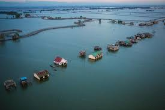
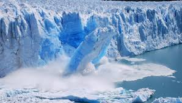
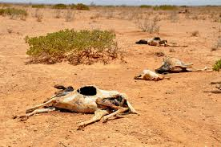
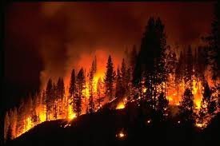

RISE IN SEA LEVEL
Increase in sea levels is the result of melting of two massive ice sheets in Antarctica and Greenland as researched by scientists. However, many nations around the world will experience the effects of rising sea levels, which could displace millions of people. The Maldives a country is already looking for a new home due to rising sea levels. Majority of Americans living in coastal states, are facing large impacts due to global warming. Seawater expands, takes more space in the ocean and causes a surplus rise in water level and also the melting of ice over land, which then adds water to the ocean.
MELTING OF GLACIERS
The melting of glaciers will create plethora of problems for human kind and the animals living on the earth. Due to increased global warming, the level of the sea will rise which will lead to flooding and this will in turn create havoc in human life. Apart from raising the sea levels, it will also endanger several species of animals and thus will hamper the balance of the ecosystem.
Areas in the Arctic are diminishing away and flowing into major oceans. Rising temperatures create a much accelerated threat to wildlife and whole ecosystems in these regions. With glaciers melting at vast rates, a chain of events is being set into motion that cannot be reversed.
DROUGHT
While it may be flooding in Savannah, severe drought is happening elsewhere in the world. As temperatures warm, the presence of drought has increased in the western U.S. Add on top of that heat waves and no precipitation, whole forests have begun to disappear including tens of millions of trees in Colorado’s Rockies.
Large scale evaporation will be the major cause of droughts in many places particularly Africa. Although, it is reeling under the huge pressure of water crisis, increased global warming would further make the situation worse and will cause malnutrition.
WILD FIRES
While wildfires are a natural occurrence, with the added carbon dioxide in the air, and hotter summers, the evidence speaks for itself. More frequent wildfires continue to surface in vast amounts each year. The rate at which they burn is longer than the last, and with the release of carbon dioxide into the air, not only are people’s lives in danger, but wildlife severely suffers. Each time a wildfire burns, the less oxygen there is to combat the dangerous amounts of carbon dioxide being released into the atmosphere.
